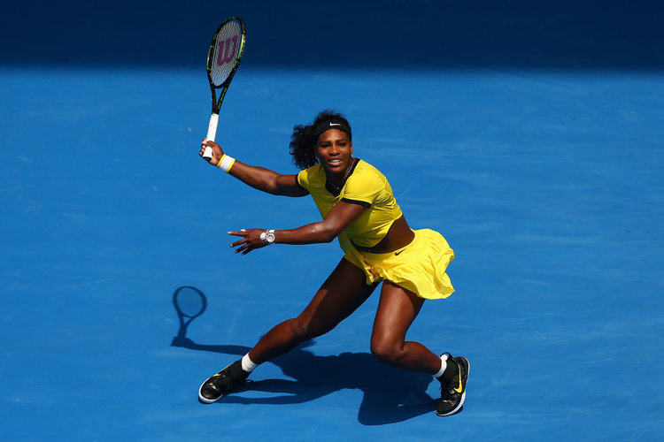
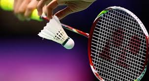
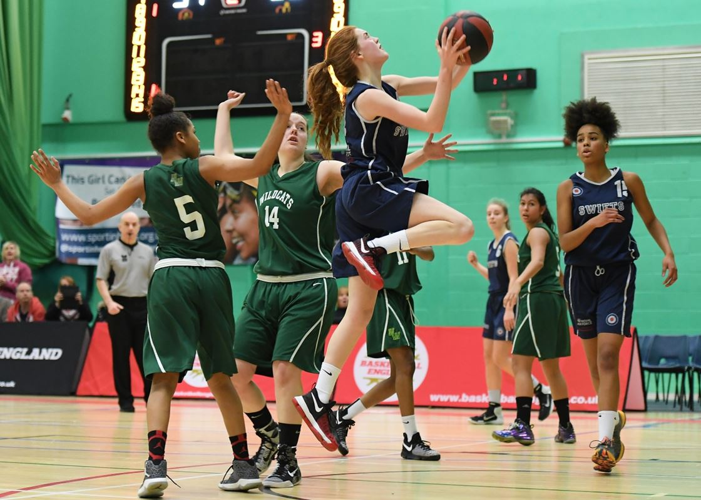
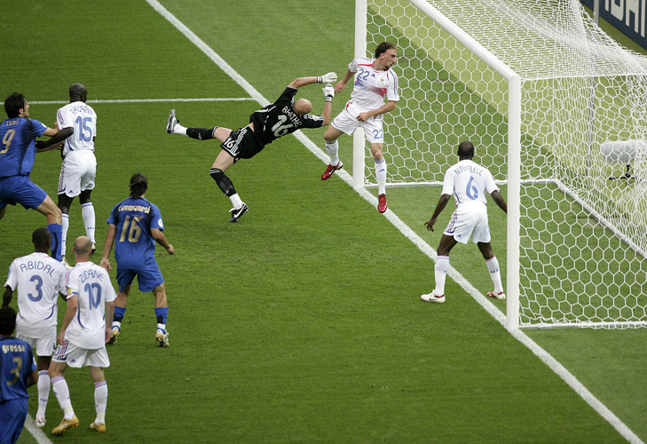
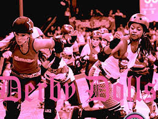

is one of the major global sports, with over 75 million participants worldwide. Many more follow the Grand Slams, Davis Cup and Fed Cup events, overseen by the International Tennis Federation (ITF) and the professional tours, governed and managed by the Association of Tennis Professionals (ATP) and the Sony Ericsson WTA (Women’s Tennis Association) Tour.
The ITF is the world governing body of tennis and is the guardian of the Rules of Tennis. However, both the ATP and WTA have flexibility in the way in which they run their respective tours (eg, they have different rules for playing in the heat and for the medical cover at events). All three organisations are involved in the development of the game and all have committees and
departments that have responsibility for sports science and sports medicine.
Badminton

The game of badminton originated in Siam, China over 2,000 years ago. It was brought to
England in 1870 and was played somewhat like tennis. After being played in Canada,
badminton arrived in America and has been popular since 1929. Since 1992, badminton has
been an Olympic sport, with bird speeds reaching 100 m.p.h.
Badminton is played as a singles or doubles game with one or two players on a side. The object
of the game is to hit the shuttlecock or “bird” back and forth with a racket across a net five feet
high at its center. The bird should be hit with such speed and accuracy that the opponent is
unable to return the shot successfully. The game can either be fast or slow paced, depending on
the skill level of the players.
Volleyball
The game of volleyball, originally called “mintonette,” was invented in 1895 by William G. Morgan after the invention of basketball only
four years before. Morgan, a graduate of the Springfield College of the YMCA, designed the game to be a combination of basketball, baseball,
tennis, and handball.
Two years later, the first two-man beach volleyball game was played, though the professional side of the sport did not emerge until much later.
Not surprisingly, the first beach volleyball association appeared in California (1965), and the professional players united under the auspices of the AVP
(American Volleyball Professionals) in 1983.
Basketball

It was the winter of 1891-1892. Inside a gymnasium at Springfield College (then known as the International YMCA Training School), located in Springfield, Mass.,
was a group of restless college students. The young men had to be there; they were required to participate in indoor activities to burn off the energy that had been
building up since their football season ended. The gymnasium class offered them activities such as marching, calisthenics, and apparatus work, but these were pale
substitutes for the more exciting games of football and lacrosse they played in warmer seasons.
Soccer

The contemporary history of the world's favourite game spans more than 100 years. It all began in 1863 in England, when rugby football and association football branched
off on their different courses and the Football Association in England was formed - becoming the sport's first governing body.
Both codes stemmed from a common root and both have a long and intricately branched ancestral tree. A search down the centuries reveals at least half a dozen different games,
varying to different degrees, and to which the historical development of football has been traced back. Whether this can be justified in some instances is disputable. Nevertheless,
the fact remains that people have enjoyed kicking a ball about for thousands of years and there is absolutely no reason to consider it an aberration of the more 'natural' form of
playing a ball with the hands
Roller derby

The term “roller derby” dates to the 1920s, originally used to describe roller skate races. In the late 1930s, Leo Seltzer’s touring competition,
Transcontinental Roller Derby, began to evolve from a marathon skating race on a raised track to a more physical competition emphasizing skater collisions and falls.
This evolved into the foundation of the team sport that still exists today: two teams of five skaters who score points by passing members of the opposing team.
Both men and women competed in roller derby from its inception.
Seltzer’s roller derby events drew increasingly large audiences once the sport began to be televised in the late 1940s. In the early 1960s, after Leo Seltzer transferred his
business to his son, Jerry, competing roller derby franchises emerged, some of which emphasized theatrics more than sport. As popularity dwindled, Jerry Seltzer shut down his Roller Derby organization in 1973.
There were several short-lived attempts to revive versions of the old sport in the 1980s and 1990s, including RollerGames, which featured a figure-8 shaped banked track and stunts like alligator pits. Some versions of roller derby,
including RollerGames, included staged action and storylines, similar to professional wrestling leagues.
Material Design
Diseño de una pagina web es de suma importancia para que la interacción entre el usuario
y el sistema sea la mejor. Al ser ingenieros no tenemos mucho conocimiento acerca del diseño, sin embargo no significa que
no sea importante, para esto tenemos frameworks que facilitan agregar estilo a una pagina web.
 The game of volleyball, originally called “mintonette,” was invented in 1895 by William G. Morgan after the invention of basketball only
four years before. Morgan, a graduate of the Springfield College of the YMCA, designed the game to be a combination of basketball, baseball,
tennis, and handball.
Two years later, the first two-man beach volleyball game was played, though the professional side of the sport did not emerge until much later.
Not surprisingly, the first beach volleyball association appeared in California (1965), and the professional players united under the auspices of the AVP
(American Volleyball Professionals) in 1983.
The game of volleyball, originally called “mintonette,” was invented in 1895 by William G. Morgan after the invention of basketball only
four years before. Morgan, a graduate of the Springfield College of the YMCA, designed the game to be a combination of basketball, baseball,
tennis, and handball.
Two years later, the first two-man beach volleyball game was played, though the professional side of the sport did not emerge until much later.
Not surprisingly, the first beach volleyball association appeared in California (1965), and the professional players united under the auspices of the AVP
(American Volleyball Professionals) in 1983.